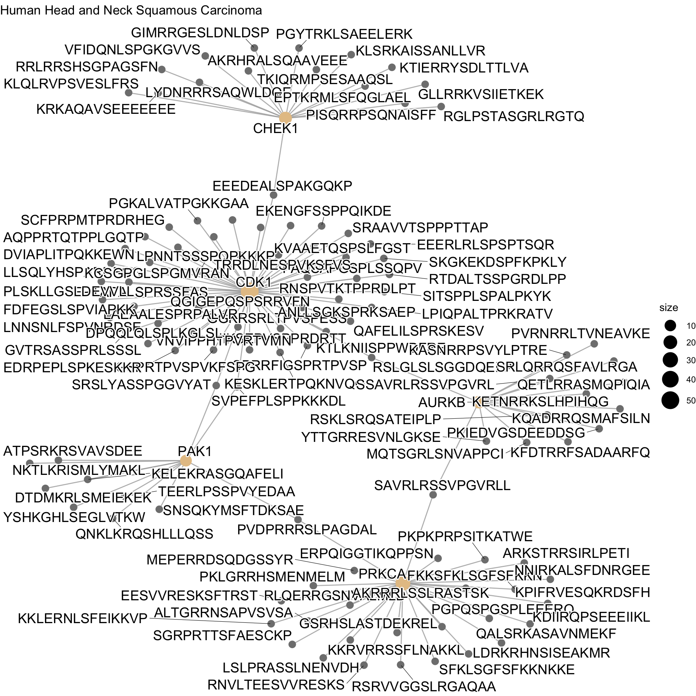
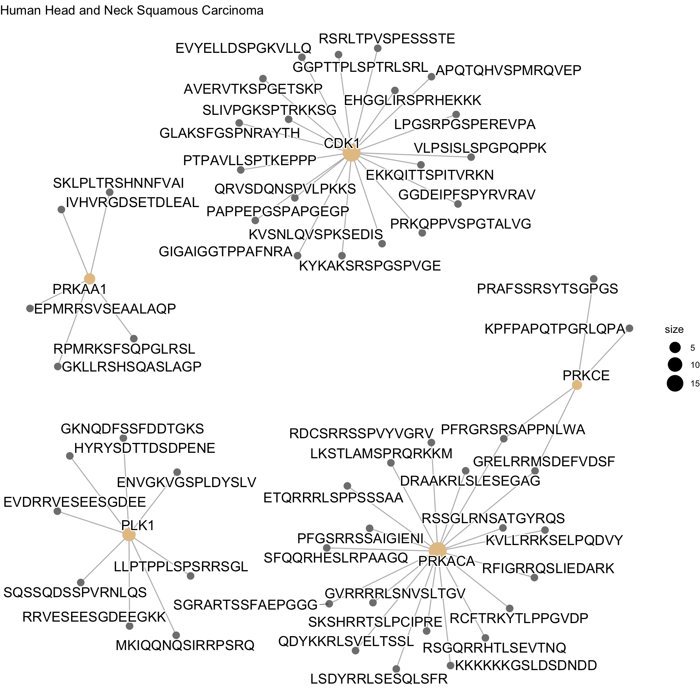
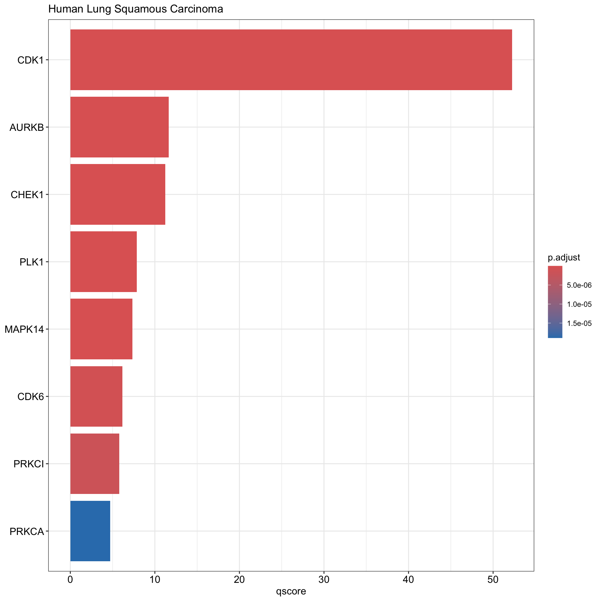
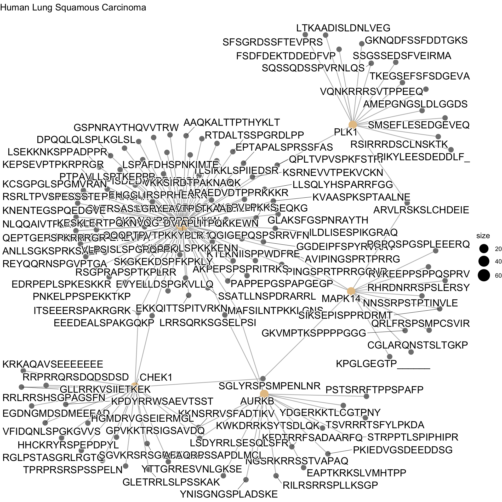
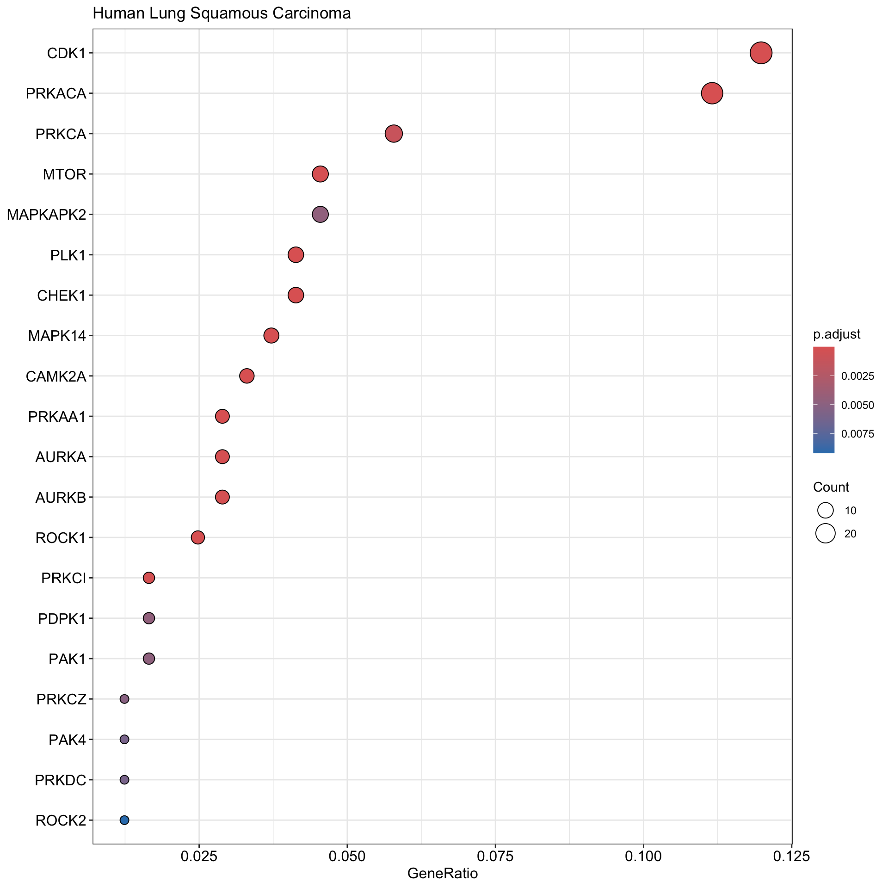
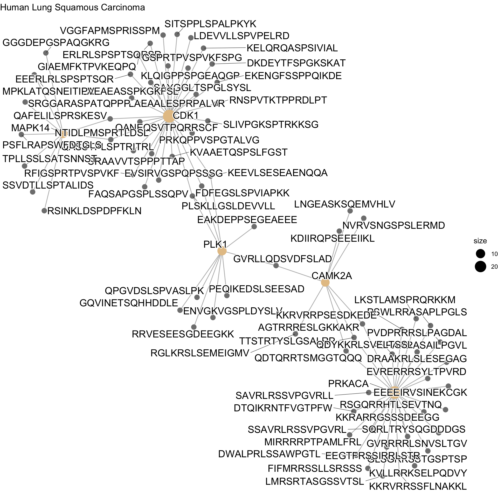
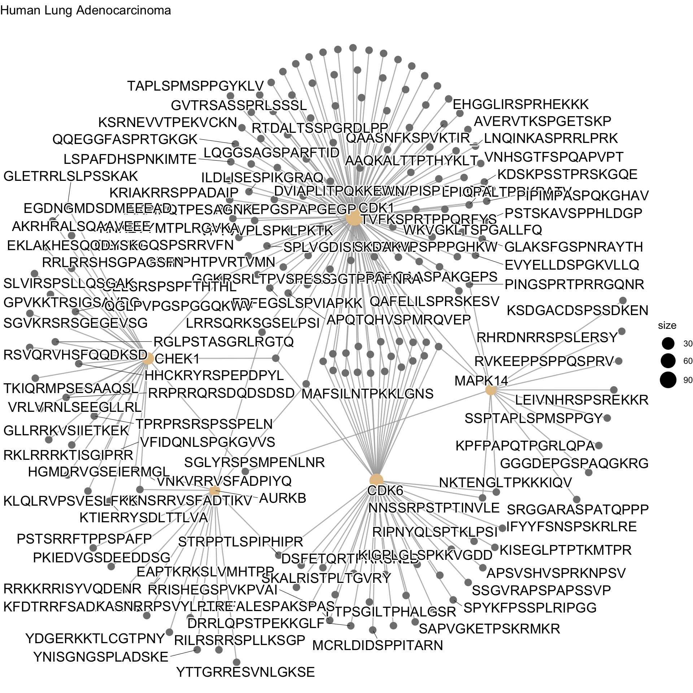
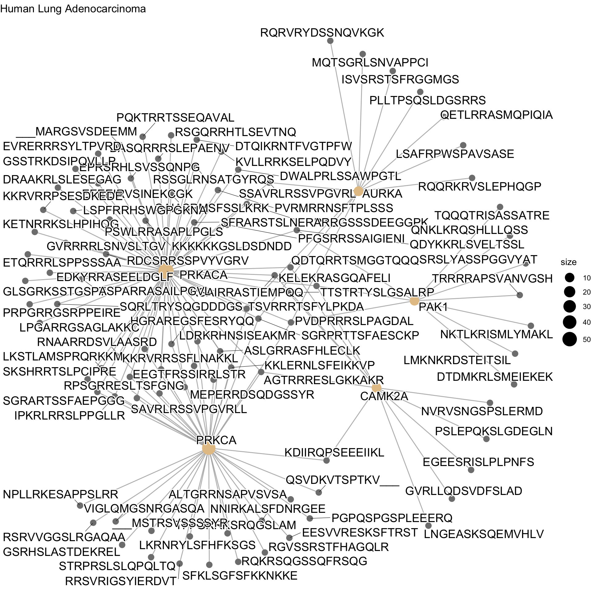
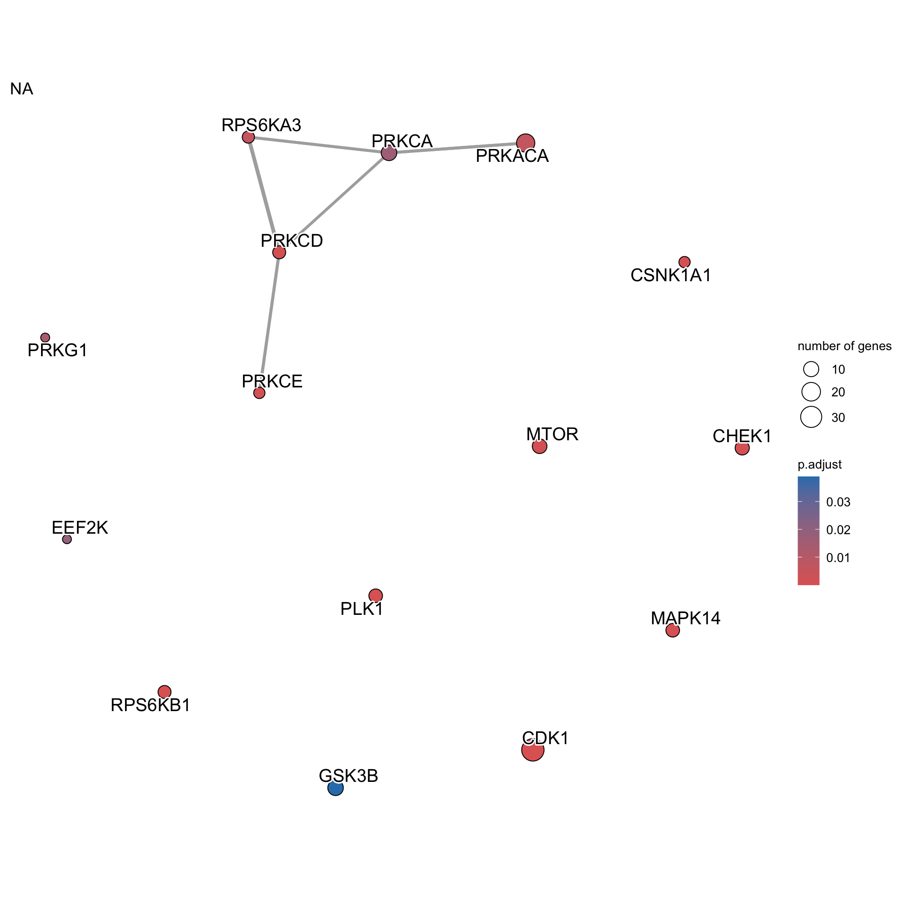

Kinase Set Enrichment Analysis
Last updated: 2024-06-25
Checks: 6 1
Knit directory: PPP/
This reproducible R Markdown analysis was created with workflowr (version 1.7.1). The Checks tab describes the reproducibility checks that were applied when the results were created. The Past versions tab lists the development history.
The R Markdown file has unstaged changes. To know which version of
the R Markdown file created these results, you’ll want to first commit
it to the Git repo. If you’re still working on the analysis, you can
ignore this warning. When you’re finished, you can run
wflow_publish to commit the R Markdown file and build the
HTML.
Great job! The global environment was empty. Objects defined in the global environment can affect the analysis in your R Markdown file in unknown ways. For reproduciblity it’s best to always run the code in an empty environment.
The command set.seed(20240521) was run prior to running
the code in the R Markdown file. Setting a seed ensures that any results
that rely on randomness, e.g. subsampling or permutations, are
reproducible.
Great job! Recording the operating system, R version, and package versions is critical for reproducibility.
Nice! There were no cached chunks for this analysis, so you can be confident that you successfully produced the results during this run.
Great job! Using relative paths to the files within your workflowr project makes it easier to run your code on other machines.
Great! You are using Git for version control. Tracking code development and connecting the code version to the results is critical for reproducibility.
The results in this page were generated with repository version 85fc7b1. See the Past versions tab to see a history of the changes made to the R Markdown and HTML files.
Note that you need to be careful to ensure that all relevant files for
the analysis have been committed to Git prior to generating the results
(you can use wflow_publish or
wflow_git_commit). workflowr only checks the R Markdown
file, but you know if there are other scripts or data files that it
depends on. Below is the status of the Git repository when the results
were generated:
Ignored files:
Ignored: .DS_Store
Ignored: .RData
Ignored: .Rhistory
Ignored: .Rproj.user/
Ignored: analysis/.DS_Store
Ignored: analysis/.RData
Ignored: analysis/.Rhistory
Ignored: code/.DS_Store
Ignored: code/TieDIE-tiedie2/.DS_Store
Ignored: code/TieDIE-tiedie2/examples/.DS_Store
Ignored: data/.DS_Store
Ignored: data/Phosphoproteome_BCM_GENCODE_v34_harmonized_v1/.DS_Store
Ignored: data/Phosphoproteome_BCM_GENCODE_v34_harmonized_v1/README/.DS_Store
Ignored: data/Proteome_BCM_GENCODE_v34_harmonized_v1/.DS_Store
Ignored: data/Proteome_BCM_GENCODE_v34_harmonized_v1/README/.DS_Store
Ignored: output/.DS_Store
Ignored: output/MUT/.DS_Store
Ignored: output/cnv/.DS_Store
Ignored: output/expr/.DS_Store
Ignored: output/pho/.DS_Store
Ignored: output/regulon/.DS_Store
Ignored: temp/.DS_Store
Untracked files:
Untracked: output/cnv/hnsc/cnv_regulators.csv
Untracked: output/cnv/kirc/cnv_regulators.csv
Untracked: output/cnv/luad/cnv_regulators.csv
Untracked: output/cnv/lusc/cnv_regulators.csv
Untracked: output/cnv/paad/cnv_regulators.csv
Untracked: output/pho/hnsc/kinase_regulators.csv
Untracked: output/pho/kirc/kinase_regulators.csv
Untracked: output/pho/luad/kinase_regulators.csv
Untracked: output/pho/lusc/kinase_regulators.csv
Untracked: output/pho/paad/kinase_regulators.csv
Unstaged changes:
Modified: analysis/Identify_CNV_Regulators.Rmd
Modified: analysis/Identify_Kinase_Regulators.Rmd
Modified: analysis/KSEA.Rmd
Modified: analysis/index.Rmd
Deleted: code/TieDIE-devel/LICENSE.txt
Deleted: code/TieDIE-devel/README.md
Deleted: code/TieDIE-devel/bin/makeKernel.py
Deleted: code/TieDIE-devel/bin/makeKernel.sh
Deleted: code/TieDIE-devel/bin/mapSamples
Deleted: code/TieDIE-devel/bin/masterReg
Deleted: code/TieDIE-devel/bin/n1_pchip
Deleted: code/TieDIE-devel/bin/network_diffusion_kernel.m
Deleted: code/TieDIE-devel/bin/pagerank_power.m
Deleted: code/TieDIE-devel/bin/personalized_pagerank_powermethod.m
Deleted: code/TieDIE-devel/bin/sherpa
Deleted: code/TieDIE-devel/bin/span.R
Deleted: code/TieDIE-devel/bin/tiedie
Deleted: code/TieDIE-devel/bin/tiedie.PSN
Deleted: code/TieDIE-devel/doc/Makefile
Deleted: code/TieDIE-devel/doc/Tutorial.bib
Deleted: code/TieDIE-devel/doc/Tutorial.pdf
Deleted: code/TieDIE-devel/doc/Tutorial.tex
Deleted: code/TieDIE-devel/doc/Tutorial.toc
Deleted: code/TieDIE-devel/examples/hnsc.sh
Deleted: code/TieDIE-devel/examples/hnsc/CNV.txt
Deleted: code/TieDIE-devel/examples/hnsc/Makefile
Deleted: code/TieDIE-devel/examples/hnsc/TieDIE/TieDIE.sif
Deleted: code/TieDIE-devel/examples/hnsc/TieDIE/edge_frequencies.txt
Deleted: code/TieDIE-devel/examples/hnsc/TieDIE/exprs.txt:methy.txt.dist.txt
Deleted: code/TieDIE-devel/examples/hnsc/TieDIE/exprs.txt:phos.txt.dist.txt
Deleted: code/TieDIE-devel/examples/hnsc/TieDIE/exprs.txt:prot.txt.dist.txt
Deleted: code/TieDIE-devel/examples/hnsc/TieDIE/heats.NA
Deleted: code/TieDIE-devel/examples/hnsc/TieDIE/heats.tab
Deleted: code/TieDIE-devel/examples/hnsc/TieDIE/methy.txt:phos.txt.dist.txt
Deleted: code/TieDIE-devel/examples/hnsc/TieDIE/methy.txt:prot.txt.dist.txt
Deleted: code/TieDIE-devel/examples/hnsc/TieDIE/node_frequencies.txt
Deleted: code/TieDIE-devel/examples/hnsc/TieDIE/node_heats.txt
Deleted: code/TieDIE-devel/examples/hnsc/TieDIE/phos.txt:prot.txt.dist.txt
Deleted: code/TieDIE-devel/examples/hnsc/exprs.txt
Deleted: code/TieDIE-devel/examples/hnsc/methy.txt
Deleted: code/TieDIE-devel/examples/hnsc/pathway.sif
Deleted: code/TieDIE-devel/examples/hnsc/phos.txt
Deleted: code/TieDIE-devel/examples/hnsc/prot.txt
Deleted: code/TieDIE-devel/examples/kirc.sh
Deleted: code/TieDIE-devel/examples/kirc/CNV.txt
Deleted: code/TieDIE-devel/examples/kirc/Makefile
Deleted: code/TieDIE-devel/examples/kirc/exprs.txt
Deleted: code/TieDIE-devel/examples/kirc/methy.txt
Deleted: code/TieDIE-devel/examples/kirc/pathway.sif
Deleted: code/TieDIE-devel/examples/kirc/phos.txt
Deleted: code/TieDIE-devel/examples/kirc/prot.txt
Deleted: code/TieDIE-devel/examples/luad.sh
Deleted: code/TieDIE-devel/examples/luad/CNV.txt
Deleted: code/TieDIE-devel/examples/luad/Makefile
Deleted: code/TieDIE-devel/examples/luad/exprs.txt
Deleted: code/TieDIE-devel/examples/luad/methy.txt
Deleted: code/TieDIE-devel/examples/luad/pathway.sif
Deleted: code/TieDIE-devel/examples/luad/phos.txt
Deleted: code/TieDIE-devel/examples/luad/prot.txt
Deleted: code/TieDIE-devel/examples/lusc.sh
Deleted: code/TieDIE-devel/examples/lusc/CNV.txt
Deleted: code/TieDIE-devel/examples/lusc/Makefile
Deleted: code/TieDIE-devel/examples/lusc/exprs.txt
Deleted: code/TieDIE-devel/examples/lusc/methy.txt
Deleted: code/TieDIE-devel/examples/lusc/pathway.sif
Deleted: code/TieDIE-devel/examples/lusc/phos.txt
Deleted: code/TieDIE-devel/examples/lusc/prot.txt
Deleted: code/TieDIE-devel/examples/paad.sh
Deleted: code/TieDIE-devel/examples/paad/CNV.txt
Deleted: code/TieDIE-devel/examples/paad/Makefile
Deleted: code/TieDIE-devel/examples/paad/exprs.txt
Deleted: code/TieDIE-devel/examples/paad/methy.txt
Deleted: code/TieDIE-devel/examples/paad/pathway.sif
Deleted: code/TieDIE-devel/examples/paad/phos.txt
Deleted: code/TieDIE-devel/examples/paad/prot.txt
Deleted: code/TieDIE-devel/galaxy/tiedie.py
Deleted: code/TieDIE-devel/galaxy/tiedie.xml
Deleted: code/TieDIE-devel/lib/consensus.py
Deleted: code/TieDIE-devel/lib/consensus.pyc
Deleted: code/TieDIE-devel/lib/distance.py
Deleted: code/TieDIE-devel/lib/distance.pyc
Deleted: code/TieDIE-devel/lib/distributions.py
Deleted: code/TieDIE-devel/lib/distributions.pyc
Deleted: code/TieDIE-devel/lib/kernel.py
Deleted: code/TieDIE-devel/lib/kernel.pyc
Deleted: code/TieDIE-devel/lib/kernel_scipy.py
Deleted: code/TieDIE-devel/lib/kernel_scipy.pyc
Deleted: code/TieDIE-devel/lib/kernel_tensorflow.py
Deleted: code/TieDIE-devel/lib/kernel_tensorflow.pyc
Deleted: code/TieDIE-devel/lib/linkers.py
Deleted: code/TieDIE-devel/lib/linkers.pyc
Deleted: code/TieDIE-devel/lib/master_reg.py
Deleted: code/TieDIE-devel/lib/master_reg.pyc
Deleted: code/TieDIE-devel/lib/pathway.py
Deleted: code/TieDIE-devel/lib/permute.py
Deleted: code/TieDIE-devel/lib/permute.pyc
Deleted: code/TieDIE-devel/lib/ppr.py
Deleted: code/TieDIE-devel/lib/ppr.pyc
Deleted: code/TieDIE-devel/lib/tiedie_util.py
Deleted: code/TieDIE-devel/lib/tiedie_util.pyc
Deleted: code/TieDIE-devel/pathways/Superpathway_Collapsed_2.0.KERNEL.zip
Deleted: code/TieDIE-devel/pathways/Superpathway_Collapsed_2.0.zip
Deleted: code/TieDIE-devel/test/kernel_tests.py
Deleted: code/TieDIE-devel/test/pathway_tests.py
Deleted: code/TieDIE-devel/test/regression.py
Deleted: code/TieDIE-devel/test/run-all.sh
Deleted: code/TieDIE-devel/test/test_files/PSN/BRCA/downstream.input
Deleted: code/TieDIE-devel/test/test_files/PSN/BRCA/upstream.input
Deleted: code/TieDIE-devel/test/test_files/PSN/expr.data
Deleted: code/TieDIE-devel/test/test_files/PSN/expr.ranked.tab
Deleted: code/TieDIE-devel/test/test_files/PSN/kernel.tab
Deleted: code/TieDIE-devel/test/test_files/PSN/mut.data
Deleted: code/TieDIE-devel/test/test_files/PSN/pathway.sif
Deleted: code/TieDIE-devel/test/test_files/PSN/upstream.input
Deleted: code/TieDIE-devel/test/test_files/REGRESSION/edge_frequencies.txt
Deleted: code/TieDIE-devel/test/test_files/REGRESSION/heats.NA
Deleted: code/TieDIE-devel/test/test_files/REGRESSION/heats.tab
Deleted: code/TieDIE-devel/test/test_files/REGRESSION/node_frequencies.txt
Deleted: code/TieDIE-devel/test/test_files/REGRESSION/node_heats.txt
Deleted: code/TieDIE-devel/test/test_files/REGRESSION/test_files.downstream.input:test_files.upstream.input.dist.txt
Deleted: code/TieDIE-devel/test/test_files/REGRESSION/tiedie.sif
Deleted: code/TieDIE-devel/test/test_files/cytoscape/downstream.input
Deleted: code/TieDIE-devel/test/test_files/cytoscape/java_results/adj.txt
Deleted: code/TieDIE-devel/test/test_files/cytoscape/java_results/deg.txt
Deleted: code/TieDIE-devel/test/test_files/cytoscape/java_results/exp.txt
Deleted: code/TieDIE-devel/test/test_files/cytoscape/java_results/lap.txt
Deleted: code/TieDIE-devel/test/test_files/cytoscape/pathway.sif
Deleted: code/TieDIE-devel/test/test_files/cytoscape/scipy_results/kernel.tab
Deleted: code/TieDIE-devel/test/test_files/cytoscape/upstream.input
Deleted: code/TieDIE-devel/test/test_files/downstream.input
Deleted: code/TieDIE-devel/test/test_files/kernel.tab
Deleted: code/TieDIE-devel/test/test_files/test.pathway.sif
Deleted: code/TieDIE-devel/test/test_files/test.tfnet.data.tab
Deleted: code/TieDIE-devel/test/test_files/test.tfnet.sif
Deleted: code/TieDIE-devel/test/test_files/test.tfnetbig.data.tab
Deleted: code/TieDIE-devel/test/test_files/test.tfnetbig.sif
Deleted: code/TieDIE-devel/test/test_files/upstream.diffused
Deleted: code/TieDIE-devel/test/test_files/upstream.input
Deleted: code/TieDIE-devel/test/test_masterReg.sh
Deleted: code/TieDIE-devel/test/test_mr.py
Deleted: code/TieDIE-devel/test/test_psn.py
Deleted: code/TieDIE-devel/test/tiedie_cytoscape_tests.py
Deleted: code/TieDIE-devel/test/util_tests.py
Modified: output/cnv/dset_hnsc.RDS
Modified: output/cnv/dset_kirc.RDS
Modified: output/cnv/dset_luad.RDS
Modified: output/cnv/dset_lusc.RDS
Modified: output/cnv/dset_paad.RDS
Modified: output/cnv/regul_hnsc.RDS
Modified: output/cnv/regul_kirc.RDS
Modified: output/cnv/regul_luad.RDS
Modified: output/cnv/regul_lusc.RDS
Modified: output/cnv/regul_paad.RDS
Deleted: output/pho/hnsc/KSEA.csv
Deleted: output/pho/hnsc/kinase_regulators.txt
Deleted: output/pho/kirc/KSEA.csv
Deleted: output/pho/kirc/kinase_regulators.txt
Deleted: output/pho/luad/KSEA.csv
Deleted: output/pho/luad/kinase_regulators.txt
Deleted: output/pho/lusc/KSEA.csv
Deleted: output/pho/lusc/kinase_regulators.txt
Deleted: output/pho/paad/KSEA.csv
Deleted: output/pho/paad/kinase_regulators.txt
Note that any generated files, e.g. HTML, png, CSS, etc., are not included in this status report because it is ok for generated content to have uncommitted changes.
These are the previous versions of the repository in which changes were
made to the R Markdown (analysis/KSEA.Rmd) and HTML
(docs/KSEA.html) files. If you’ve configured a remote Git
repository (see ?wflow_git_remote), click on the hyperlinks
in the table below to view the files as they were in that past version.
| File | Version | Author | Date | Message |
|---|---|---|---|---|
| Rmd | 85fc7b1 | Zhen Zuo | 2024-06-24 | . |
| html | 85fc7b1 | Zhen Zuo | 2024-06-24 | . |
| html | f0809ae | Zhen Zuo | 2024-06-17 | . |
| Rmd | 9d7bb61 | Zhen Zuo | 2024-06-16 | . |
| html | 9d7bb61 | Zhen Zuo | 2024-06-16 | . |
| html | e55118d | Zhen Zuo | 2024-06-16 | Build site. |
| html | 7576f76 | Zhen Zuo | 2024-06-16 | wflow_publish("*", all = TRUE) |
| Rmd | 3477290 | Zhen Zuo | 2024-06-16 | update workflow |
| html | 3477290 | Zhen Zuo | 2024-06-16 | update workflow |
| Rmd | 8c84adb | Zhen Zuo | 2024-06-16 | . |
library(clusterProfiler)clusterProfiler v4.12.0 For help: https://yulab-smu.top/biomedical-knowledge-mining-book/
If you use clusterProfiler in published research, please cite:
T Wu, E Hu, S Xu, M Chen, P Guo, Z Dai, T Feng, L Zhou, W Tang, L Zhan, X Fu, S Liu, X Bo, and G Yu. clusterProfiler 4.0: A universal enrichment tool for interpreting omics data. The Innovation. 2021, 2(3):100141
Attaching package: 'clusterProfiler'The following object is masked from 'package:stats':
filterlibrary(ggplot2)
library(EnsDb.Hsapiens.v86)Loading required package: ensembldbLoading required package: BiocGenerics
Attaching package: 'BiocGenerics'The following objects are masked from 'package:stats':
IQR, mad, sd, var, xtabsThe following objects are masked from 'package:base':
anyDuplicated, aperm, append, as.data.frame, basename, cbind,
colnames, dirname, do.call, duplicated, eval, evalq, Filter, Find,
get, grep, grepl, intersect, is.unsorted, lapply, Map, mapply,
match, mget, order, paste, pmax, pmax.int, pmin, pmin.int,
Position, rank, rbind, Reduce, rownames, sapply, setdiff, table,
tapply, union, unique, unsplit, which.max, which.minLoading required package: GenomicRangesLoading required package: stats4Loading required package: S4Vectors
Attaching package: 'S4Vectors'The following object is masked from 'package:clusterProfiler':
renameThe following object is masked from 'package:utils':
findMatchesThe following objects are masked from 'package:base':
expand.grid, I, unnameLoading required package: IRanges
Attaching package: 'IRanges'The following object is masked from 'package:clusterProfiler':
sliceLoading required package: GenomeInfoDbLoading required package: GenomicFeaturesLoading required package: AnnotationDbiLoading required package: BiobaseWelcome to Bioconductor
Vignettes contain introductory material; view with
'browseVignettes()'. To cite Bioconductor, see
'citation("Biobase")', and for packages 'citation("pkgname")'.
Attaching package: 'AnnotationDbi'The following object is masked from 'package:clusterProfiler':
selectLoading required package: AnnotationFilter
Attaching package: 'ensembldb'The following object is masked from 'package:clusterProfiler':
filterThe following object is masked from 'package:stats':
filterfull_name <- c("Human Kidney Renal Clear Cell Carcinoma",
"Human Head and Neck Squamous Carcinoma",
"Human Lung Squamous Carcinoma",
"Human Lung Adenocarcinoma",
"Human Pancreas Carcinoma")
names <- c("kirc", "hnsc", "lusc", "luad", "paad")ksa <- read.gmt("data/gold_standard_CoPheeKSA.gmt")
#meta <- read.csv("data/KSA_gold_standard.csv")
#meta <- meta[!duplicated(meta$seq_15),]
#geneID <- ensembldb::select(EnsDb.Hsapiens.v86, keys = meta$UniProt.ID.1, keytype = "UNIPROTID",
# columns = c("SYMBOL", "UNIPROTID", "GENEID"))
#meta$UniProt.ID.1_SYMBOL <- plyr::mapvalues(meta$UniProt.ID.1, from = geneID$UNIPROTID,
# to = geneID$SYMBOL, warn_missing = FALSE)
#meta$GS <- paste(meta$UniProt.ID.1_SYMBOL, meta$Position, sep="_")
#ksa$gene <- plyr::mapvalues(ksa$gene, from = meta$seq_15, to = meta$GS)
i <- 1
for (name in names) {
cat("\n\n")
cat("# ", full_name[i], sep = "")
cat("\n\n")
i <- i + 1
dps <- read.csv(paste("output/DPS/", name, "_fc_0.05_kinases.csv",
sep = ""))
dps_plus <- dps[dps$Fold_Change > 0, ]
dps_neg <- dps[dps$Fold_Change < 0, ]
cat("\n\n")
cat("## Positive")
cat("\n\n")
dps <- dps_plus
dps <- dps[order(dps$Adjusted_P_Value, decreasing = TRUE), ]
gse <- enricher(gene = dps$Seq, TERM2GENE = ksa)
dir.create(paste("output/pho/", name, "/", sep = ""), showWarnings = FALSE)
write.table(gse@result, paste("output/pho/", name, "/KSEA.csv",
sep = ""))
cat("\n\n")
cat("### Barplots")
cat("\n\n")
print(mutate(gse, qscore = -log(p.adjust, base = 10)) %>%
barplot(x = "qscore") + ggtitle(full_name[i]))
cat("\n\n")
cat("### Dotplots")
cat("\n\n")
print(dotplot(gse, showCategory = 30) + ggtitle(full_name[i]))
cat("\n\n")
cat("### Kinase-Concept Network")
cat("\n\n")
print(cnetplot(gse, color.params = list(foldChange = dps$Fold_Change)) +
ggtitle(full_name[i]))
cat("\n\n")
cat("### Enrichment Map")
cat("\n\n")
print(emapplot(enrichplot::pairwise_termsim(gse)) + ggtitle(full_name[i]))
cat("\n\n")
cat("## Negative")
cat("\n\n")
dps <- dps_neg
dps <- dps[order(dps$Adjusted_P_Value, decreasing = TRUE), ]
gse <- enricher(gene = dps$Seq, TERM2GENE = ksa)
dir.create(paste("output/pho/", name, "/", sep = ""), showWarnings = FALSE)
write.table(gse@result, paste("output/pho/", name, "/KSEA.csv",
sep = ""))
cat("\n\n")
cat("### Barplots")
cat("\n\n")
print(mutate(gse, qscore = -log(p.adjust, base = 10)) %>%
barplot(x = "qscore") + ggtitle(full_name[i]))
cat("\n\n")
cat("### Dotplots")
cat("\n\n")
print(dotplot(gse, showCategory = 30) + ggtitle(full_name[i]))
cat("\n\n")
cat("### Kinase-Concept Network")
cat("\n\n")
print(cnetplot(gse, color.params = list(foldChange = dps$Fold_Change)) +
ggtitle(full_name[i]))
cat("\n\n")
cat("### Enrichment Map")
cat("\n\n")
print(emapplot(enrichplot::pairwise_termsim(gse)) + ggtitle(full_name[i]))
}Human Kidney Renal Clear Cell Carcinoma
Positive

Kinase-Concept Network

Negative
Kinase-Concept Network

Human Head and Neck Squamous Carcinoma
Positive
Barplots

Kinase-Concept Network


Negative
Dotplots

Kinase-Concept Network

Human Lung Squamous Carcinoma
Positive
Kinase-Concept Network


Negative
Kinase-Concept Network

Human Lung Adenocarcinoma
Positive
Human Pancreas Carcinoma
Positive
Negative
Enrichment Map

| Version | Author | Date |
|---|---|---|
| 85fc7b1 | Zhen Zuo | 2024-06-24 |
sessionInfo()R version 4.4.0 (2024-04-24)
Platform: aarch64-apple-darwin20
Running under: macOS Sonoma 14.5
Matrix products: default
BLAS: /Library/Frameworks/R.framework/Versions/4.4-arm64/Resources/lib/libRblas.0.dylib
LAPACK: /Library/Frameworks/R.framework/Versions/4.4-arm64/Resources/lib/libRlapack.dylib; LAPACK version 3.12.0
locale:
[1] en_US.UTF-8/en_US.UTF-8/en_US.UTF-8/C/en_US.UTF-8/en_US.UTF-8
time zone: America/New_York
tzcode source: internal
attached base packages:
[1] stats4 stats graphics grDevices utils datasets methods
[8] base
other attached packages:
[1] EnsDb.Hsapiens.v86_2.99.0 ensembldb_2.28.0
[3] AnnotationFilter_1.28.0 GenomicFeatures_1.56.0
[5] AnnotationDbi_1.66.0 Biobase_2.64.0
[7] GenomicRanges_1.56.1 GenomeInfoDb_1.40.1
[9] IRanges_2.38.0 S4Vectors_0.42.0
[11] BiocGenerics_0.50.0 ggplot2_3.5.1
[13] clusterProfiler_4.12.0
loaded via a namespace (and not attached):
[1] RColorBrewer_1.1-3 rstudioapi_0.16.0
[3] jsonlite_1.8.8 magrittr_2.0.3
[5] farver_2.1.2 rmarkdown_2.27
[7] BiocIO_1.14.0 fs_1.6.4
[9] zlibbioc_1.50.0 vctrs_0.6.5
[11] Rsamtools_2.20.0 memoise_2.0.1
[13] RCurl_1.98-1.14 ggtree_3.12.0
[15] S4Arrays_1.4.1 htmltools_0.5.8.1
[17] curl_5.2.1 SparseArray_1.4.8
[19] gridGraphics_0.5-1 sass_0.4.9
[21] bslib_0.7.0 plyr_1.8.9
[23] cachem_1.1.0 GenomicAlignments_1.40.0
[25] whisker_0.4.1 igraph_2.0.3
[27] lifecycle_1.0.4 pkgconfig_2.0.3
[29] Matrix_1.7-0 R6_2.5.1
[31] fastmap_1.2.0 gson_0.1.0
[33] MatrixGenerics_1.16.0 GenomeInfoDbData_1.2.12
[35] digest_0.6.35 aplot_0.2.3
[37] enrichplot_1.24.0 ggnewscale_0.4.10
[39] colorspace_2.1-0 patchwork_1.2.0
[41] rprojroot_2.0.4 RSQLite_2.3.7
[43] labeling_0.4.3 fansi_1.0.6
[45] abind_1.4-5 httr_1.4.7
[47] polyclip_1.10-6 compiler_4.4.0
[49] bit64_4.0.5 withr_3.0.0
[51] BiocParallel_1.38.0 viridis_0.6.5
[53] DBI_1.2.3 highr_0.11
[55] ggforce_0.4.2 MASS_7.3-61
[57] DelayedArray_0.30.1 rjson_0.2.21
[59] HDO.db_0.99.1 tools_4.4.0
[61] ape_5.8 scatterpie_0.2.3
[63] httpuv_1.6.15 glue_1.7.0
[65] restfulr_0.0.15 nlme_3.1-165
[67] GOSemSim_2.30.0 promises_1.3.0
[69] grid_4.4.0 shadowtext_0.1.3
[71] reshape2_1.4.4 fgsea_1.30.0
[73] generics_0.1.3 gtable_0.3.5
[75] tidyr_1.3.1 data.table_1.15.4
[77] tidygraph_1.3.1 utf8_1.2.4
[79] XVector_0.44.0 ggrepel_0.9.5
[81] pillar_1.9.0 stringr_1.5.1
[83] yulab.utils_0.1.4 later_1.3.2
[85] splines_4.4.0 dplyr_1.1.4
[87] tweenr_2.0.3 treeio_1.28.0
[89] lattice_0.22-6 rtracklayer_1.64.0
[91] bit_4.0.5 tidyselect_1.2.1
[93] GO.db_3.19.1 Biostrings_2.72.1
[95] knitr_1.47 git2r_0.33.0
[97] gridExtra_2.3 ProtGenerics_1.36.0
[99] SummarizedExperiment_1.34.0 xfun_0.45
[101] graphlayouts_1.1.1 matrixStats_1.3.0
[103] stringi_1.8.4 UCSC.utils_1.0.0
[105] workflowr_1.7.1 lazyeval_0.2.2
[107] ggfun_0.1.5 yaml_2.3.8
[109] evaluate_0.24.0 codetools_0.2-20
[111] ggraph_2.2.1 tibble_3.2.1
[113] qvalue_2.36.0 ggplotify_0.1.2
[115] cli_3.6.2 munsell_0.5.1
[117] jquerylib_0.1.4 Rcpp_1.0.12
[119] png_0.1-8 XML_3.99-0.16.1
[121] parallel_4.4.0 blob_1.2.4
[123] DOSE_3.30.1 bitops_1.0-7
[125] viridisLite_0.4.2 tidytree_0.4.6
[127] scales_1.3.0 purrr_1.0.2
[129] crayon_1.5.2 rlang_1.1.4
[131] cowplot_1.1.3 fastmatch_1.1-4
[133] KEGGREST_1.44.0